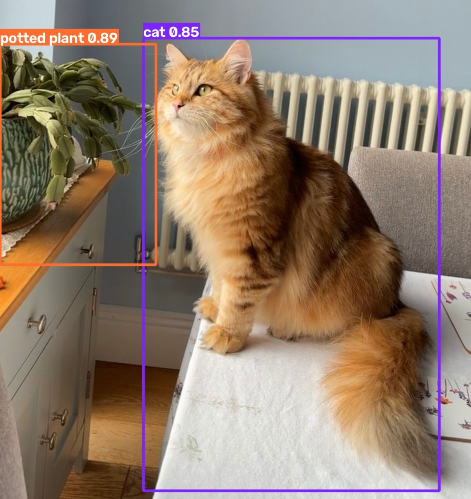

"Computer vision is a subfield of artificial intelligence (AI) that equips machines with the ability to process, analyze and interpret visual inputs such as images and videos" -IBM
"Computer vision enables machines to interpret, analyze, and pull meaningful data from images and videos. This field of AI uses deep learning and neural networks to recognize objects, people, and patterns with high degrees of accuracy. In other words, it replicates human sight and the cognitive ability to interpret visual data." -Microsoft
"Computer vision tasks include methods for acquiring, processing, analyzing, and understanding digital images, and extraction of high-dimensional data from the real world in order to produce numerical or symbolic information, e.g. in the form of decisions" -Wikipedia
Computer Vision is how we process pictures/video into something computers can understand, how computer handle that information, and how we extract useful conclusions from those pictures/videos.
